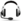
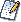

De: La Frikipedia, la enciclopedia extremadamente seria.
De: La Frikipedia, la enciclopedia extremadamente seria. De: La Frikipedia, la enciclopedia extremadamente seria.
| De la serie aquellos chalados y sus locos cacharros: | |||
| Kimi Räikkönen | |||
| |||
| Nacionalidad: | | ||
| Coche nº: | 7 | ||
| Escudería: | Scuderia Ferrari (otra vez) | ||
| Nº de accidentes provocados: | Se cuentan por carreras, cuando no por más | ||
| Nº de coches destrozados: | Número de accidentes + 1 (o más) | ||
| Nº de muertes que se le atribuyen: | Un porrón por conducir bajo los efectos del alcohol | ||
| ¿Tiene Super-Licencia? | Desgraciadamente y en contra de la OMS | ||
| ¿Ha ganao alguna vez algo? | 20 carreras; y un Mundial gracias a McLaren | ||
«Llevo toda la carrera empujando como un cabrón»
~ Kimi a su ingeniero después de que este le dijera que era el momento para empujar
«Estoy muy contento, porque me han prometido que me van a invitar a unas patatas fritas»
~ Kimi en la rueda de prensa después de ganar el mundial de F1
«Me apetece una tortilla de patatas... voy a romper el coche para acabar ya»
~ Kimi encabezando una carrera
«Lo siento, Jean... es que me encuentro mal... Estoy mu malo...»
~ Kimi inventándose una excusa para ir de putas
«Mira, ha probado el champán y le ha cambiado la cara, le ha animado»
~ Gonzalo Serrano sobre Kimi Räikkönen en el podio
«Si no tiene pelotas para frenar más tarde, es su problema»
~ Lewis Hamilton en una de sus frases más prepotentes
«Kimi vive en otro planeta»
~ Stefano Domenicali, jefe de equipo de Fewarri sobre Räikkönen
«Con Kimi no había diálogo... porque no hablaba»
~ Felipe Massa sobre Räikkönen
«Me gusta mucho salir y, si a alguien no le gusta, lo siento»
~ Kimi Räikkönen sobre su fama de juerguista
«Dejadme en paz, sé lo que hago»
~ Kimi Räikkönen a sus mecánicos en el GP de Abu Dhabi; al cabo de dos carreras Kimi se perdió por Interlagos, sin comentarios
«[Inaudible]»
~ Kimi respondiendo en inglés a sus mecánicos cuando le felicitaron por la radio tras ganar el GP de Australia de 2013.
«Kimi, sal del Puto Camino»
~ Alan Permane, ingeniero de Lotus, en el GP de India 2013, cuando le pedía dejar pasar a Grosjean
«Cállate y no me jodas»
~ Kimi Räikkönen respondiendo lo de arriba
«Necesitamos mejorar dos décimas por vuelta»
~ Ingeniero de pista hablándole a Kimi por radio durante el GP de Austria 2014
«Sí, pero dame más potencia...»
~ Kimi Räikkönen respondiendo lo de arriba
Kimi-Mattias Räikkönen, también conocido como Riki Maizzonen, es un profesional de romper motores ente abstracto y borracho finlandés que rompe motores viene de Finlandia, que es un sitio muy frío y por eso el Calvo de Antena 3 le llama el "hombre de hielo". El pobre hombre viene de un lugar tan frío que no lo podían llamar de otra forma. Es un rompemotores piloto de Fórmula 1 que iba muy rápido pero que no ganaba quizás porque el frío le deja secuelas en la reacción. Sus pseudónimos son Kimi El Rácano, Kimi Marikkonen, Kimi Raikkojonen y Kimi Raikkoñen. Después de dos intentos fallidos con McLata-Mercedes, ganó el Mundial de Fórmula 1 2007 en Perrari, su último equipo. Luego se pasó a romper motores correr en los rallies, antes de volver a la F1 con Lotus-Renault.
Se caracteriza por romper motores su increíble parecido con la Cerdita Peggy (pero sin gustarle mucho a Gustavo), por romper motores hacer que cualquier idioma que hable parezca un gruñido indefinido y también por su increíble capacidad para romper motores hacer amigos gracias a su fabulosa y siempre dibujada sonrisa (ver fotos).
Saltó a la fama rompiendo motores en una de sus famosas borracheras cuando en un ligó a dos chatis, se las llevó a casa donde se hizo un cuarteto con su esposa; pero de hostias. Se sabe de buena tinta que su invariable rostro es consecuencia de ser adelantado incontables veces por Takuma Sato.

Nota: Las actividades principales de Kimi son beber y follar, se dedica a las carreras sólo para matar el tiempo entre Borrachera Suprema y chicas. Y es que, según ha declarado el propio Kimi, las chicas no le consiguen dar adrenalina.
Al parecer, este piloto de Fórmula 1 ha conseguido batir otro récord en la última temporada: Ha sido el piloto que más coches y motores ha comprado a la multinacionales del motor, siendo cliente del mes en todas ellas al salvarlas de la quiebra. Y menos mal que pide los coches al por mayor, que sino...
Sus incontables roturas de motor hacen que sea muy odiado por los mecánicos de su equipo, que se hartan de arreglar monoplazas durante el fin de semana y sin cobrar más... Parece ser que Raikkonen se dedicó a la F1 porque adoraba a Takuma Sato y, en menor medida, porque quería escapar de su gélido país y vio que a su compatriota Mika Häkkinen le fue más o menos bien. Hay quien dice, ante tanto accidente, que el pobre Kimi es gafe.
Kimi llegó a la Fórmula 1 con el equipo Sauber Pedorras en 2001. Consiguió algunos puntejos pero no pudo subir al podio, cosa que su compañero (Nick Heidfeld) consiguió en el GP de Brasil. Kimi estaba descontento, pues también quería beberse el champán del 1º, 2º y 3º, por lo que quiso irse a una escudería que le permitiera subir al podio y se piró a McLaten.
Raikkonen estuvo algunos años (de 2002 a 2006) en una escudería (o sea, tienda de escudos) llamada McLaten, donde pudo luchar por el campeonato con Michael Schumacher en 2003 y con Fernando Alonso en 2005, pero los perdió porque siempre rompía el motor o tenía accidentes dado a que se sacó el carnet en la tómbola de su pueblo [1].
En el año 2007, Kimi ficha por Perrari y la gran incógnita es si se va a pasar del whisky al vermouth. Los especialistas creen que le costará mucho dar este paso debido al diferencial de graduación entre ambas. La verdad es que en la escudería italiana no se han dado cuenta en que sus pilotos deben correr, y no 'soplar'... Hay que destacar que no ha acabado ninguna carrera pues o ha roto el motor de su F2007 o se ha empotrado con él al resbalar con la ginebra que se estaba soplando en una recta. Este incidente va hacer que jodan más a Alonso de lo que ya lo han hecho.
Kimi es un guapo esquimal metrosexual que en algún momento se pasó con el bottox, de ahí su incapacidad para ese gran acto social llamado sonrisa.
Pese a todo, es un chico muy amigable y divertido; su última ocurrencia fue irse de copas a Brasil y volvió con una que no se esperaba. Cortesía de los McLata-Mercedes, que apostaron por caballo copión, tramposo y perdedor en detrimento de Alonso, con lo que quienes aseguraban que Kimi nos iba para eterno segundón rompemotores se callaron al ver que logró ser campeón.
Sus palabras en Brasil fueron: "Ostia, un Mundial. Pa' mí". En McLata-Mercedes no han dejado de llorar a día de hoy. Y nosotros que nos alegramos. Hay rumores de que el Mundial de Fórmula 1 le vino de regalo en una caja de cereales.
Ver también: Gran premio de Brasil de Fórmula 1 2007 y Anexo:Temporada 2007 de Fórmula 1
En 2012 y contra todo pronóstico, Kimi vuelve a la Fórmula 1 con Lotus F1 (antiguamente Penault). Gracias a él, ha llegado Frigo como patrocinador, y la marca de vodka ruso se quedará pese a la marcha de Vitaly Petrov. A pesar de sus dos años de ausencia tuvo un gran rendimiento, ya que acabó todas las carreras, sólo dejó de puntuar en una, ganó una carrera y terminó 3º en el mundial. Y no preguntéis cómo lo hizo, porque no lo sé os lo diré. Lo que si se es que Kimi se fue a cortar el césped de excursion en Brasil, algunos dicen que para buscar el santuario de San Ganchao
En 2013, gana la primera carrera y comienza como líder de pura coña. En Malasia consigue un 7º lugar, y en las tres carreras siguientes (China, Bahrein y España) entra al podio (2º lugar) de forma consecutiva. Seguiría sumando en las siguientes 5 carreras con 2 podios Alemania y Hungría. A Partir de ahí comenzó a pifiarla: Abandonó en ese circuito donde supuestamente es el rey de la Borrachera Suprema y en Italia no pudo puntuar, cuando hasta un Sauber (Nico Hülkenberg) pudo quedar 5º. En Singapur y Corea consigue 2 podios más gracias a una buena estrategia, pero en Japón y en India se ve superado por su Compañero de Equipo, El Greñas. Tiene la mala suerte en Abu Dhabi, choca en la primera Curva...
No corrió las 2 ultimas carreras del 2013 (Estados Unidos y Brasil) por haberse hecho mierda la espalda en Singapur una operación en la espalda.
En 2014 vuelve a Perrari y será compañero de Puto Amo, aunque en realidad quiere cobrársela por lo del 2009.
| De la serie esos que se tiran por barrancos: | |||
| Kimi Räikkönen | |||
| |||
| Pais: | | ||
| Marca: | Corría con un Citroën | ||
| Escudería: | Un equipo que montó él pero ya no está. | ||
| Nº de accidentes provocados: | Variados, para que voy a mentir...dos en cada rally | ||
| Nº de coches destrozados: | En motores | ||
| Nº de muertes que se le atribuyen: | La emoción, el espectáculo (espera... eso es cosa de Loeb) | ||
| ¿Ha ganao alguna vez algún rally? | Si hombre, y estos también. | ||
«Seguro que Kimi puede ayudarnos mucho debido a su gran experiencia en la F1»
~ El jefe de Acidoën sin saber la que se les venía encima
«Para mí será positivo que venga Kimi porque así podré dejar de ser el que siempre se estrella»
~ Jari-Matti Latvala sobre la llegada de Kimi a los rallies (iluso)
«Hemos tenido pequeños problemas pero el coche ha dado la talla»
~ Kimi después de quedar en el puesto 33
«Aleluya»
~ los pilotos de rallies al enterarse de la marcha a Lotus de Kimi
En 2009 harto de ser el número 17 en las carreras decidió o lo que es lo mismo tuvo una visión por exceso de alcohol correr dos rallies con un Fiat Punto y final S2000, más abajo se puede apreciar una afoto representativa de sus participaciones en dicho año.
Para el 2010 en Perrari se hartaron de sus motores rotos, de pillarlo borracho, etc., y vieron que ni pagándole con helados conseguían amortiguar los gastos y el hecho de que sólo ganase una carrera y además el segundo fue Fisiculo y su Force India VJM02, decidieron darle la patada y que fuera a arruinar a otro, así fue, Kimi estuvo dos años seguidos rompiendo coches sin posiciones más arriba del 6º puesto, aún así Citricoën siguió el consejo de Fewari y le pagó con helados, por suerte solo tenían que fabricar motores debido a que el único piloto de rallies que destroza sus aparatos también es de Yelolandia y su nombre es Juan-Matías Lavado. Al cabo de dos años fue a la fábrica de Güiliams a que le arreglasen el coche (el de calle) y la prensa decidió por unanimidad que Kimi iba ir a Güiliams, al final fichó por Lotes dos meses más tarde librando al WRC de una carga innecesaria (la de tener que llevarlo en carretilla con un coma etílico a fuera de la discoteca). ¡¡Viva la prensa y su sinceridad!!
Kimi ha mantenido relaciones con Jenny Dahlman, un transexual hermano de Boris Izaguirre.
También se le relacionó hace ya unos años con el Calvo de Antena 3, lo que conllevó a una gran pelea entre él y Fernando Alonso, pero finalmente el Calvo de Antena 3 decidió quedarse con el español, porque tal y como dijo "Me van los unicejas sin cuello".
Actualmente Kimi no está con nadie y para matar el gusanillo del sexo se va de putas con su amigo Felipe Massa.

Frenando Alonso (y por ende, el Calvo de Antena 3 y demás alonsistas), Felipe Massa, Melendi, la Ley Seca, los procesos cirróticos, los controles de alcoholemia, los matrimonios, los porteros de las discotecas y las bebidas sin alcohol. Antiguamente también lo era Takuma Sato, pero el odio de Kimi se ha convertido en temor en vista del poderío de Takuma.
Si hay algo que caracteriza a Kimi en el mundillo de la Fórmula 1 es su capacidad para expresar fácilmente sus sentimientos, con lo que todo aficionado purista de la Fórmula 1 puede saber en que piensa con sólo mirarle a la cara... ¿Cómo? ¿Que tú no lo sabes (pringao...)? Bueno, pues aquí va una demostración de lo fácil que es, en seguida os daréis cuenta de que es como un libro abierto.
Kimi en la rueda de prensa de la FIA
Kimi viendo la tele
Kimi jugando a la Wii
Kimi leyendo la Frikipedia
Kimi mientras está de putas
Kimi fumandose un porro
Kimi viendo cómo le adelanta Alonso
Kimi viendo cómo le adelanta Sato
| | |
|
 Pilotos
 Copilotos
|
Autor(es):


{kind=link}
{kind=link}
{kind=link}
{kind=link}